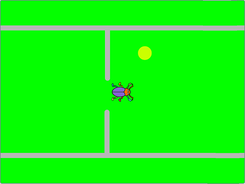

Dafür lassen wir einen Käfer über einen Hintergrund, der sich selbst bewegt, krabbeln und es gibt folgende Regeln:
- Der Hintergrund bewegt sich mit GeschwindkeitHintergrund (1) von rechts nach links
- Der Hintergrund hat Linien, die der Käfer nicht berühren darf und es gibt 4 verschiedene Varianten
- Der Käfer kann mit GeschwindkeitKäfer (5) nach oben und unten krabbeln, um auszuweichen
- Alle 10 Sekunden wird der Hintergrund schneller
- Auf dem Hintergrund gibt es immer wieder gelbe Kreise, die den Käfer schneller machen
- Dabei wird pro Berührung nur einmal die GeschwindkeitKäfer erhöht!
